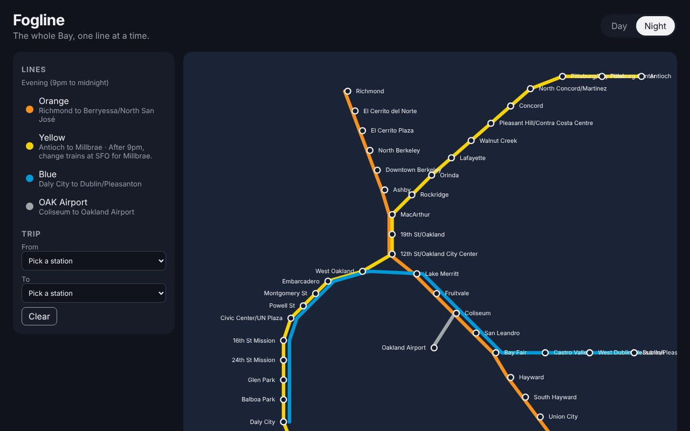
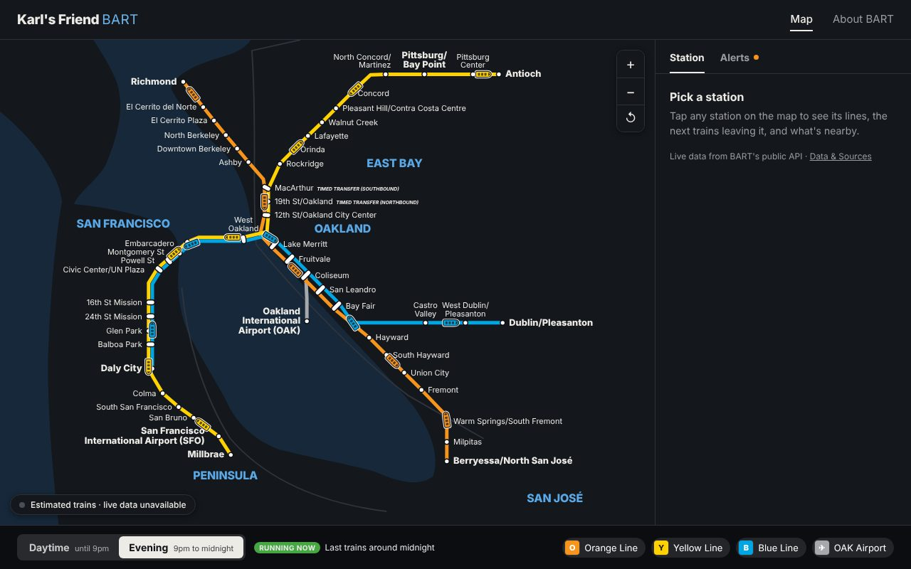

Karl's Friend Bart · Oct 2026
Mind the Map
A BART rider who feels confused by the map needs to see where their train is actually going, but the official map is a still picture of every line at once.
How It Went
-
Oct 24Research
The Problem
The official map shows every line at once and never changes. After 9pm, Red and Green stop running and transfers change. Nothing tells you. I found out at the wrong stop.
-
Oct 24Design
My Own Map First
I started with a dark custom map. It looked cool, but it didn't look like BART, and that was the problem.

-
Oct 24Design
Back to the Real Map
Riders already know the official map, so I rebuilt it. Then I added a trip planner, and it got crowded.

-
Oct 24Product
Cut the Trip Planner
Other apps already plan trips. I cut it and moved the line controls to a bottom bar your thumb can reach.

-
Oct 28Tech
Live Trains and a Night Mode
Mini trains from BART's live API. At 9pm the site switches to the evening network on its own.

Day 
After 9pm
Looking Back
- What worked
- Keeping the official look. Nobody had to learn anything new.
- What I'd do differently
- I built from my own frustration. Next time I'd watch a few riders use it before building.
- What's next
- Test it with riders, then pitch it to BART as a clearer map.